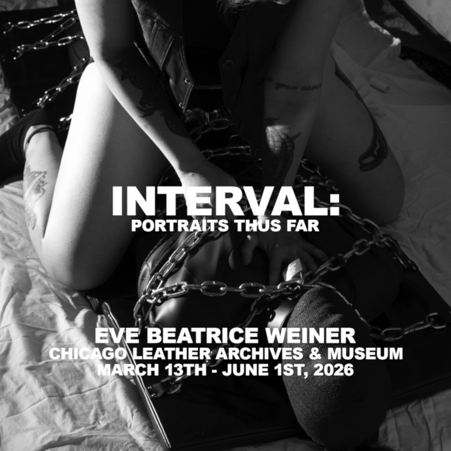

Interval: Portraits Thus Far
Eve Beatrice Weiner (he/they) is a transsexual leatherdyke photographer and writer currently based in Brooklyn, NY. He is staunchly committed to art as both a creative continuation of sadomasochistic leather history/practice and a utility of preservation. They have worked with Kink Out to curate and platform fellow artists in the greater discipline, and he continues to serve his local contemporary scene through documentation and unwavering commitment to the sanctity and praxis of leather. With some of their work already collected into the Chicago LA&M, they are thrilled to be able to present a cohesive exhibition for public viewing.